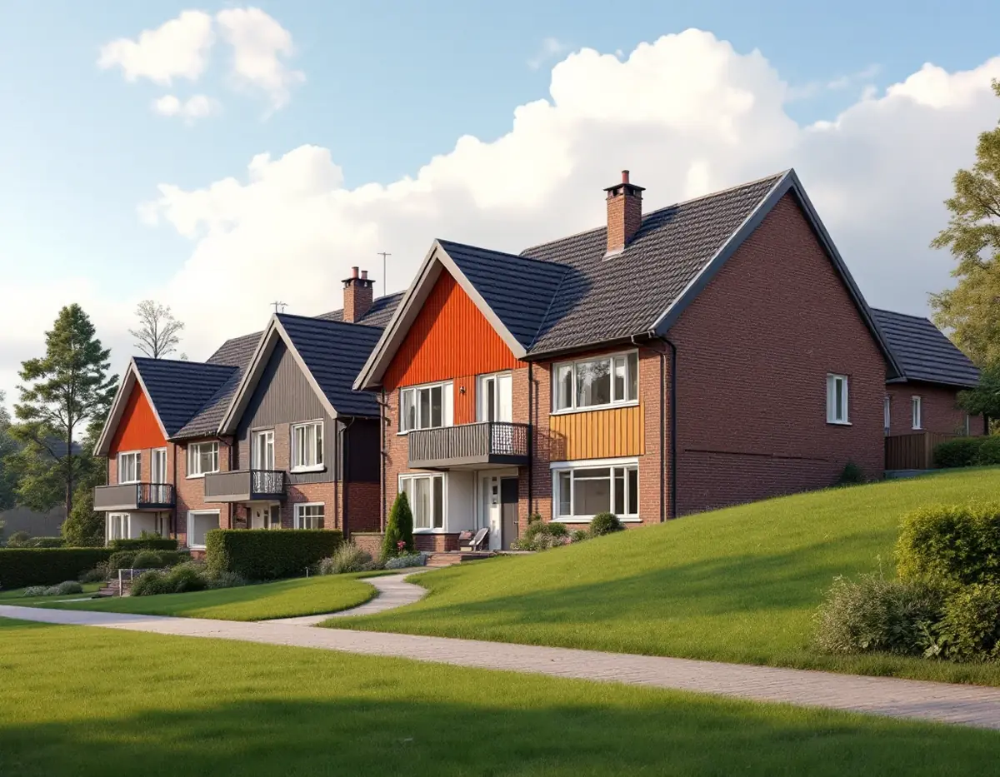
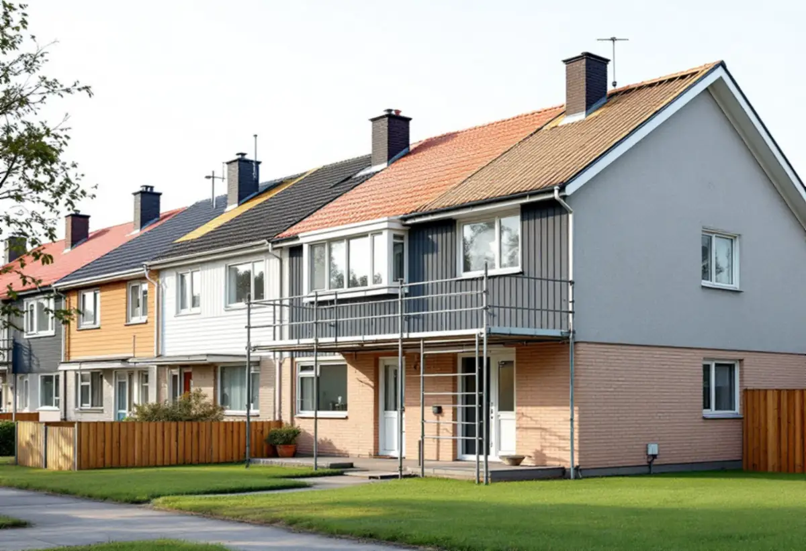
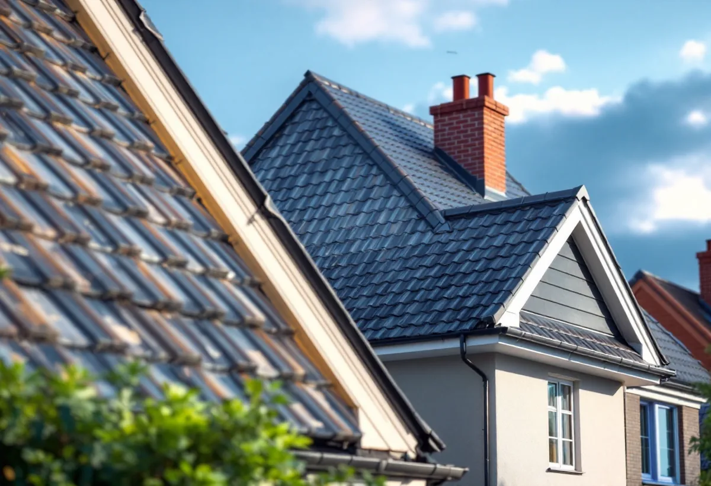

Kartan
Vi kontrollerar Stadsmuseets karta, särskilt i Bredäng.
I Skärholmens stadsdelsområde ägs nästan alla småhus med äganderätt, och inget av dem är en bostadsrätt. Det gör att du själv bestämmer över ditt tak, men på ett radhus sitter taket ihop med grannarnas och syns i hela gruppen. Geal Entreprenad AB byter tak på radhus, kedjehus och villor i Sätra, Bredäng, Vårberg och Skärholmen och planerar bytet med längan i tankarna.

Stadens områdesfakta för 2025 visar 1 976 småhus med äganderätt i Skärholmens stadsdelsområde, 15 hyresrätter och inga småhus i bostadsrätt. Per stadsdel finns 577 småhus med äganderätt i Vårberg, 543 i Skärholmen, 536 i Sätra och 320 i Bredäng.
Det skiljer Skärholmen från många andra stadsdelar med radhus från samma tid, där föreningar ofta äger husen. Här är det du som beställer, betalar och får rotavdraget, men det är ändå klokt att prata med grannarna, eftersom taken i en länga hänger ihop vid nock, takfot och gavlar.

Enligt stadens strategi för småhusområden, Varsam, var Bredäng den första stadsdelen som planerades i stor skala, med byggstart 1962, följd av Sätra. En stor andel av miljonprogrammets bebyggelse utgjordes av gruppbyggda småhus och radhus, och Sätra nämns som ett av exemplen där det också byggdes villor och atriumhus.
Varsam beskriver hur nivåskillnader ofta togs upp med en souterrängvåning. På ett sådant hus är taket högre upp mot ena sidan än det ser ut från gatan, och vi planerar ställning och materialtransport efter terrängen och gångvägarna i området.
I Varsam-tabellen är Bredäng markerat som kulturhistoriskt värdefull miljö, medan Sätra, Skärholmen och Vårberg saknar den markeringen. Stockholms stad skriver att utökad lovplikt gäller i särskilt kulturhistoriskt värdefulla områden, och hänvisar till Stadsmuseets klassificeringskarta som en första indikation för den enskilda fastigheten.
Att byta till ett annat taktäckningsmaterial räknas enligt Boverket som fasadändring, medan samma material och utförande räknas som underhåll. I Bredäng kontrollerar vi kartan innan ett nytt material föreslås.
Varsam beskriver de gruppbyggda småhusen som mycket enhetliga inom varje husgrupp, med variation mellan områdena, och påpekar att färgsättningen var enhetlig inom grupperna. Ett nytt tak i en avvikande kulör eller profil syns därför i hela längan.
Vi föreslår material och kulör efter vad grannarna har, och när flera hus byter tak samtidigt kan ställning och avfallshantering delas. Om fasader och kulörer i stadsdelen kan du läsa under fasadmålning i Skärholmen.
Varsam påpekar att de gruppbyggda småhusen står på små tomter, att påbyggnader förekommer och att mindre tillbyggnader, som inglasade uterum, är vanliga. Har ditt hus ett uterum eller en tillbyggnad ansluter dess tak ofta mot huvudtaket eller mot fasaden strax under takfoten.
Den anslutningen är en vanlig plats för läckage, och vid ett takbyte ser vi över den i samma arbete. Ska även uterummets tak bytas går vi igenom det separat i kostnadsförslaget.
Under pannorna ser vi över läkt, underlagstäckning och råspont, och plåten vid nock, gavlar och mot grannhuset görs om i samma arbete. Skadat trä byts innan det nya taket läggs.
Om takläggning i stadsdelen i stort finns mer under takläggare i Skärholmen, och om tjänsten under takbyte.

Vi kontrollerar Stadsmuseets karta, särskilt i Bredäng.
Taket, anslutningarna mot grannarna och terrängen runt huset går vi igenom.
Med ställning, material och plåtarbeten redovisade.
Vi samordnar gärna om flera hus i längan vill byta samtidigt.
Gammalt tak rivs, underlaget ses över och nytt tak läggs.
Vi går igenom taket och anslutningarna med dig.
Skatteverket räknar byte och reparation av takpannor och hängrännor på ett småhus som rotarbete, när du äger och bor i huset eller har det som fritidshus. Eftersom småhusen i Skärholmen ägs med äganderätt gäller avdraget i regel för den som äger och bor i huset.
Avdraget är högst 30 procent av arbetskostnaden, högst 50 000 kronor per person och år och högst 75 000 kronor tillsammans med rutavdrag. Material och resor ger inget avdrag. Geal drar avdraget direkt på fakturan.
Takets yta, material, underlagets skick, anslutningar mot grannhusen, terrängen runt huset och om flera hus byts samtidigt. En överblick finns i vad kostar ett takbyte. Efter ett gratis platsbesök får du ett skriftligt kostnadsförslag.
Byte av tegel-, betong- och plåttak.
Takbyte →Takbyte, takbesiktning och plåtarbeten.
Takläggare i Skärholmen →Radhus i grupper i Bredäng, Sätra och Vårberg.
Takrenovering i Skärholmen →Radhusen, källarplanet och golvbrunnen.
Badrumsrenovering i Skärholmen →Radhusen från 60- och 70-tal.
Fasadmålning i Skärholmen →Miljonprogrammets radhus.
Fönsterrenovering i Skärholmen →1960-talskök, bostadsrätt och radhus.
Köksrenovering i Skärholmen →Lägenheter, trapphus och radhus.
Målare i Skärholmen →Altan, plank och förråd vid radhuset.
Snickare i Skärholmen →Ny tapet i hyresrätt och bostadsrätt.
Tapetsering i Skärholmen →